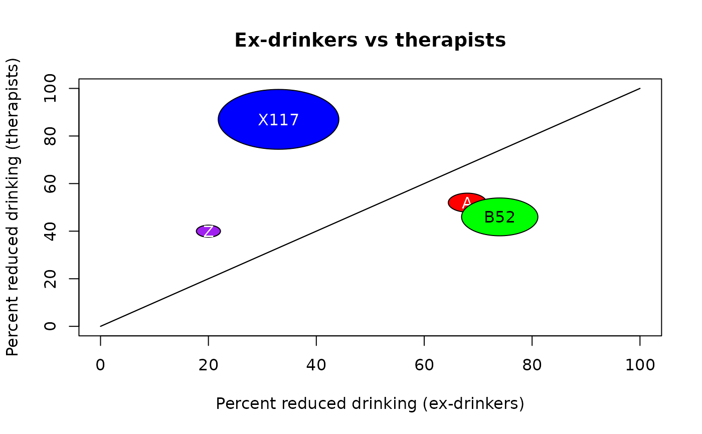

Display a L'Abbe plot
labbePlot.RdDisplay the percentages of successes for two conditions to be compared as circles, the area of which is proportional to the number of observations.
Usage
labbePlot(x,main="L'Abbe plot",xlab="Percent positive response with placebo",
ylab="Percent positive response with treatment",labels=NULL,col=NA,
circle.mag=0.5,add=FALSE,...)Arguments
- x
A list of either 2x2 tables or three element vectors (see Details).
- main
The title of the plot.
- xlab,ylab
The x and y axis labels as in plot.
- labels
Text strings that will be displayed in the center of the circles.
- col
A list of colors for the circles.
- circle.mag
A fudge factor for very small or very large numbers of observations.
- add
Whether to add the information in x to an existing L'Abbe plot.
- ...
additional arguments passed to plot.
Details
The elements of x may be tables in which rows represent the conditions being compared, with the comparison condition first (often "placebo") and the condition of interest (often "intervention") second. The columns represent the counts of successes and failures. The elements of x can also be vectors with three numeric values, first the percentage of successes for the comparison condition, second the percentage of successes for the condition of interest and finally the number of observations. Tables and vectors can be mixed.
The radius of each circle is the square root of the number of observations multiplied by circle.mag. This allows very small numbers of observations to be expanded and very large numbers to be reduced in size. As the area of each circle is proportional to the number of observations, circle.mag must be the same for all circles. The user may wish to expand or contract all the circles on a plot so that they will fit within the box.
The labels, if not NULL, are displayed on the circles. The function tries to work out whether white or black text will be more easily read based on the background color and displays the text accordingly.
Examples
# first fake something like the data from a clinical trial
didf<-data.frame(subject=1:50,interv=rep(c("therapist","ex-drinker"),each=25),
outcome=sample(c("more","less"),50,TRUE))
# make it into a table
didf.tab<-table(didf$interv,didf$outcome)
# now mix in some raw percentages just for the example
didf2<-c(74,46,200)
didf3<-c(33,87,500)
x<-list(didf.tab,didf2,didf3)
labbecol<-list("red","green","blue")
labbePlot(x,main="Ex-drinkers vs therapists",
xlab="Percent reduced drinking (ex-drinkers)",
ylab="Percent reduced drinking (therapists)",
labels=list("A","B52","X117"),col=labbecol)
labbePlot(list(c(20,40,20)),col=list("purple"),labels=list("Z"),add=TRUE)
